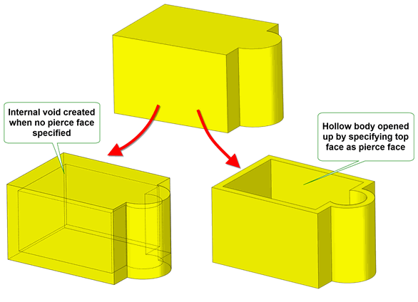
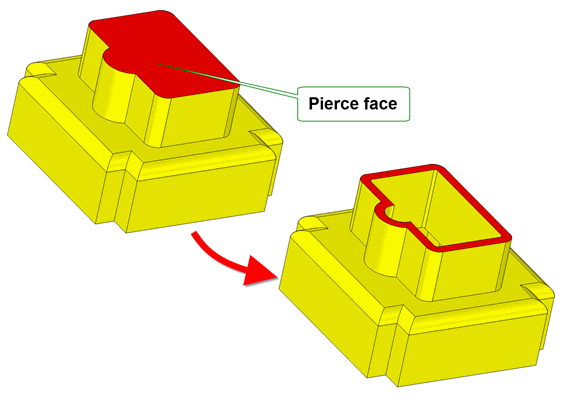
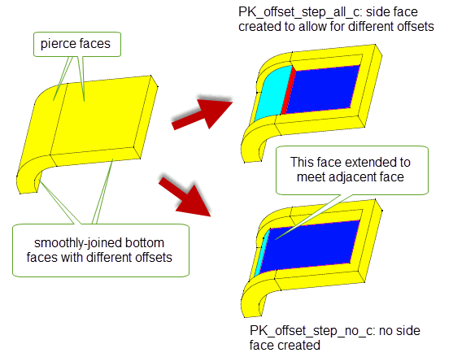
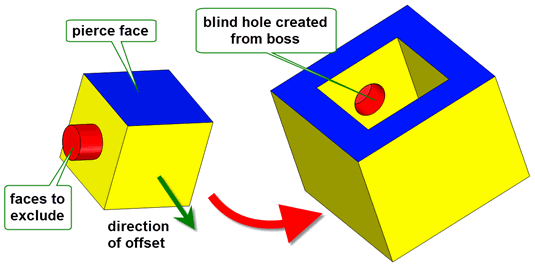
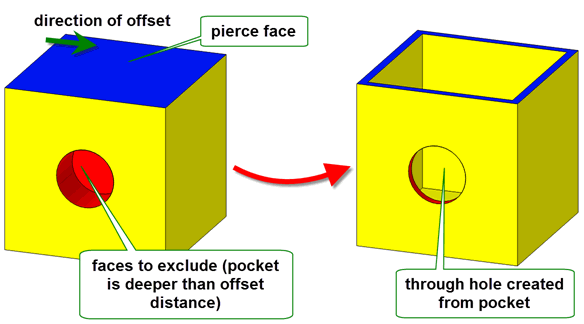
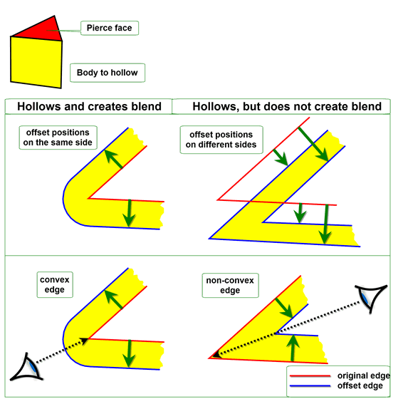
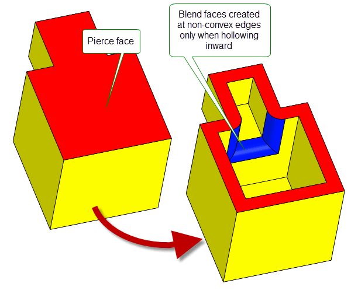
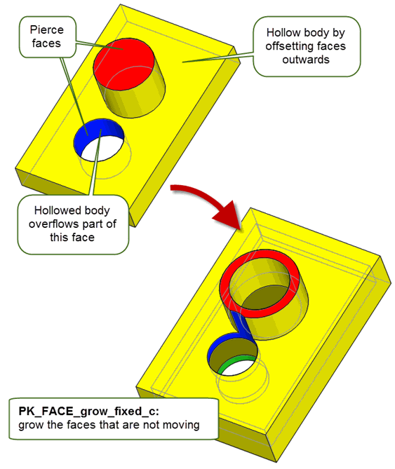

| |
Hollowing |
| <<< Offsetting | Chapters | Thickening >>> |
Hollowing is the process of offsetting all (or most of) the faces in a body, and then creating solid and void regions appropriately so as to create a hollowed version of the original body.
At a rudimentary level, hollowing a given body consists of the following steps:
When you hollow a body, Parasolid offsets all the faces in the body by the specified distance automatically, rather than requiring you to specify each offset face individually. In addition, Parasolid handles the subtraction of the original and offset versions of the body in order to produce the hollowed result. This makes Parasolid’s hollowing functionality easy to use, removing the need for you to think about the algorithmic details required to produce a hollowed body.
Although Parasolid’s offsetting functionality is fundamental to the hollowing process, a complete understanding of offsetting is not required in order to use hollowing. However, it is useful to understand how the two types of functionality are related.
Offsetting every face in a body creates a hollow body with an internal void region. More often, you need to give access to the void region by opening up the body. You do this by designating one or more faces from the body as pierce faces. During the hollow operation, pierce faces are not offset, and instead the relevant parts of those faces are removed so as to open up the void region. A simple example is shown in Figure 60-1.
Figure 60-1 Using pierce faces to open up a hollowed body
Hollowing is also related to thickening.
The changes to topology and geometry that are permitted during hollowing operations are similar to those permitted for offsetting operations. See Section 59.11, “Changes to topology and geometry”, for more details.
|
Note: This functionality offers partial support for facet geometry. |
You hollow a solid using the function PK_BODY_hollow_2. This function receives a
body
and creates a hollowed body by offsetting all the faces by the specified
offset
. Under some circumstances it may be necessary to replace exact edge geometry with tolerant geometry. Parasolid uses the supplied
tolerance
when calculating approximate geometry.
As with offsetting, the supplied
offset
can be positive or negative:
The following table provides a summary of the options available in PK_BODY_hollow_2. These are described in more detail throughout the rest of this chapter.
|
An array of faces that should be pierced. See Section 60.3, “Specifying pierce faces”. |
|
|
An array of faces that should be offset by a distance other than the default. See Section 60.4, “Creating walls of different thicknesses”. |
|
|
An array of offset distances corresponding to the array of faces in |
|
|
The method by which self-intersections are removed when hollowing. This is the same option as available in Parasolid’s offsetting functionality. See Section 59.3, “Removing self-intersections” for more details. |
|
report_sx |
Whether to report such self-intersections in the Parasolid report. See Section 59.3, “Removing self-intersections”. Also available in all offsetting and thickening operations. |
|
Whether to create side faces between faces that are offset by different distances during the hollowing operation. See Section 60.5, “Creating step faces along smooth edges”, for more details. |
|
|
Whether to fix degeneracies in the input body prior to hollowing. Whether to report such degeneracies in the Parasolid report. See Section 59.4, “Dealing with degenerate faces”. Also available in all offsetting and thickening operations. |
hollow_local |
Whether to hollow all the faces in the body (the default), or a subset. See Section 60.6, “Local hollowing”, for more details. |
local_faces |
If hollowing a subset of faces, this array describes the faces that should be hollowed. See Section 60.6, “Local hollowing”, for more details. |
blend_edges blend_radius |
Whether to create blend faces from edges that are offset, and the radius to use for those blend faces. See Section 60.7, “Creating blends from offset edges” |
grow grow_data grow_cb |
How to heal models when features of different convexity overflow each other. See Section 60.8, “Controlling the growth of overflowing faces”. Also available in all hollowing and thickening operations. |
update |
Update switch to maintain consistency when rebuilding models built in older versions of Parasolid. See Section 63.5.2, “Update control”, for information. Default: PK_local_ops_update_default_c. |
Generally, you need to open up a body when it is hollowed, so as to create, for instance, an open box from a solid block. You do this by specifying that one or more faces in the body should be
pierce faces, that is, faces whose offset distance is zero, using the
pierce_faces
option in PK_BODY_hollow_2.
As part of the hollowing operation, each pierce face is reduced in size by performing a local boolean using any shared edges in their pre-offset and offset positions, so as to leave only the solid portion of the pierce face that remains after hollowing has taken place. This is illustrated in Figure 60-2.
Figure 60-2 Body with several pierce faces, before and after hollowing
By default, all faces in a body (except for any pierce faces) are offset by the same distance during the hollow operation. You can optionally choose to offset a subset of those faces by different distances by using the
offset_faces
and
offset_values
options. Each face listed in the
offset_faces
array is offset by the corresponding value in
offset_values
. If any of the values are zero, then the corresponding face is treated as a pierce face.
Figure 60-3 shows an example of this.
Figure 60-3 Hollowed body where the offset distances are varied
If you are offsetting adjacent faces by different distances, and if those faces are joined smoothly, then side faces may be required between the resulting offset faces in order for the hollow operation to succeed. This is particularly important if you have specified tangent pierce faces, where a pierce face is joined smoothly to adjacent faces; side faces are always required in these circumstances.
You can use the
offset_step
field in the options structure to create side faces between smoothly-joined faces automatically. This option takes the following values:
Figure 60-4 shows an example in which a body has been hollowed, with the top two faces specified as pierce faces. The corresponding two faces on the bottom, which are joined smoothly, have been given different offsets. Figure 60-4 illustrates the difference between a hollowed body with side faces, and one without.
Figure 60-4 Generating side faces when hollowing a body
Figure 60-5 shows an example of a tangent pierce face. Because the pierce face specified is joined smoothly to all the adjacent faces, side faces need to be created in order for the hollow operation to succeed. If
offset_step
was left at its default setting, the example in
Figure 60-5 would fail.
Figure 60-5 Hollowing a body using a tangent pierce face
|
Note: Creating step faces at smooth edges splits the end vertices of those edges. You can supply a maximum of two different offset distances (including zero) for the faces that share that vertex. |
By default, PK_BODY_hollow_2 hollows an entire body, by offsetting all the faces in the body (except for those you specify as pierce faces). However, if you want, you can choose to hollow out only part of a body. This can be useful in a variety of situations, for example:
You use the
hollow_local
option to control the use of local hollowing, as follows:
|
Hollow only specified faces. This value should only be used if you want to hollow some new features on a body that is already hollowed. See Section 60.6.1, “Adding to an existing hollowed body”. |
|
|
Hollow everything except specified faces. This is useful if you are hollowing a body for the first time, but want to omit certain parts of the body (such as the handle of a cup) from the hollow operation. See Section 60.6.2, “Excluding faces from a hollow operation”. |
|
You specify the set of faces you want to hollow, or exclude from hollowing, using the
local_faces
option. This takes an array of faces, which should be connected together in such a way as to represent one or more elements of the body that can be independently hollowed or excluded from a hollow operation. For example, the faces that form a boss on a body can be successfully hollowed locally. However, specifying two disjoint and unrelated faces on a body would typically result in a failed hollow operation. For a fuller description of constraints on local hollowing functionality, see Section 60.6.3, “Constraints on local hollowing functionality”.
|
Note: Local hollowing is independent from the pierce face functionality. For example if you use PK_hollow_local_exclude_c, the specified faces are
not treated as pierce faces. They are simply not hollowed. |
Figure 60-6 shows an example in which new bosses that have been added to a hollowed body are themselves hollowed.
hollow_local
is set to to PK_hollow_local_add_c.
local_faces
is set to the eight faces that comprise both bosses (four faces for each boss, not including the top face).
pierce_faces
.Figure 60-6 Adding faces to a hollow operation
When adding to an existing hollowed body, the offset values you supply need not be the same as the offsets used when hollowing the original body.
Figure 60-7 shows an example in which an element in an unhollowed body is excluded from the hollow operation. The example shows an unhollowed wine glass; clearly, hollowing the stem of the wine glass is undesirable. However, you can create the correct hollowed body in a single call to PK_BODY_hollow_2 as follows:
hollow_local
is set to to PK_hollow_local_exclude_c.
local_faces
is set to the six faces that comprise the stem of the glass.
pierce_faces
.Figure 60-7 Excluding faces from a hollow operation
Local hollowing is not guaranteed to be successful in every case. Sometimes, if given inappropriate input, the hollow operation fails. This section describes some of the most common constraints on local hollowing functionality, so that you can avoid any obvious pitfalls.
The most basic constraint in local hollowing is that of the faces passed to the
local_faces
array. This array must consist of collections of connected faces that, broadly speaking, describe locally one or more solid features in the body being hollowed. Passing in isolated faces that do not sensibly describe solid features results in a failure.
When adding faces to a hollowed operation, the body that you are operating on must already be hollowed. Adding faces to an unhollowed body may lead to undesirable results.
When excluding faces during hollowing (Section 60.6.1), if you offset outwards, thereby creating a larger body, the elements you are trying to exclude may be consumed by the hollow operation. Figure 60-8 shows an example where a boss is to be excluded from the hollow. By offsetting outwards, the boss is consumed by the hollowed body, resulting in a blind hole.
Figure 60-8 Consuming an excluded boss by offsetting outwards
Similarly, if you exclude faces that form a pocket, and subsequently hollow by offsetting inwards, the excluded elements may be consumed, as shown in Figure 60-9.
Figure 60-9 Consuming an excluded pocket by offsetting inwards
More generally, depending on the feature being excluded, hollowing may result in any of the following:
When you hollow a body, you can optionally choose to round off the edges of the body that are offset during the hollow operation.
To do this, you can use the
blend_edges
and
blend_radius
options available in PK_BODY_hollow_2, which let you replace offset edges in a hollowed body with constant-radius rolling-ball blends.
You use these options in the same way as the identical options available in offsetting operations, and they are subject to the same constraints. See Section 59.8, “Creating blends from offset edges”, for more information.
Figure 60-10 illustrates the configurations in which edges are offset to blend faces.
Figure 60-10 Constraints for replacing offset edges with blends
An example of this functionality is shown in Figure 60-11.
Figure 60-11 Creating blends from offset edges during hollow operations
Blends can be created from offset edges in all hollowing and thickening operations. The
blend_edges
and
blend_radius
options are available in the following options structures:
Note: The
blend_edges
value PK_EDGE_offset_blend_convex_c is not supported for mixed edges. |
When features with different convexities overflow each other as a result of hollowing, you can control which of the clashing features is grown to heal the model using the
grow
option.
Figure 60-12 shows a simple example of the effects that you can achieve using this functionality.
Figure 60-12 Controlling the growth of overflowing features with different convexity
This option is available in a range of different functional areas, including local operations, hollowing, and thickening.
In addition you can override Parasolid’s behaviour using the
grow_data
and
grow_cb
fields.
For a full description, see Section 73.5.5, “Controlling the growth of overflowing faces”.
As an alternative to PK_BODY_hollow_2, the function PK_FACE_hollow_3 lets you create hollowed bodies by specifying exactly which faces should be offset, and by how much. This function receives a list of faces and a list of offsets, and produces a hollowed body by offsetting each face by the specified amount. The behaviour of PK_FACE_hollow_3 differs from PK_BODY_hollow_2 in that any faces not specified are treated as pierce faces.
You may want to use this function on rare occasions if for example, you have a large number of pierce faces. In the majority of cases, however, PK_BODY_hollow_2 is the recommended function to use.
| <<< Offsetting | Chapters | Thickening >>> |